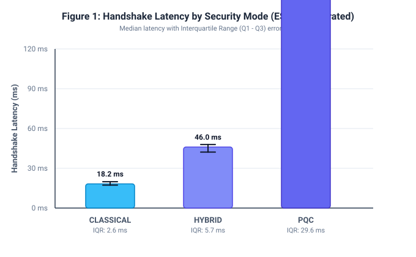
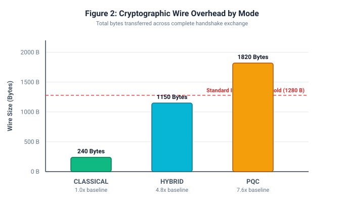
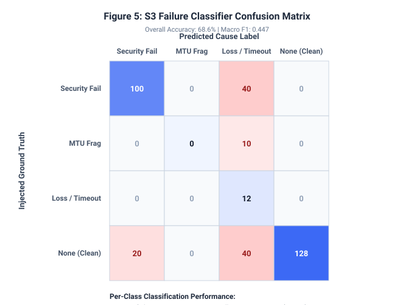
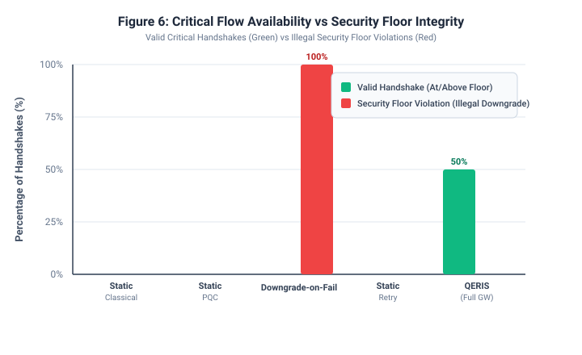

QERIS Empirical Evaluation Dashboard
Figure1 Latency By Mode

Handshake latency across Classical, Hybrid, and PQC modes on calibrated ESP32 constrained hardware. Shows median and IQR error bars.
Figure2 Bandwidth Overhead

Wire overhead per handshake. ML-KEM-512 PQC pushes handshake size past 1280 B IPv6 MTU, motivating cause-aware MTU re-fragmentation.
Figure3 Success Vs Loss Rate

Handshake reliability under uniform and burst loss. Full Gateway sustains >85% success while static baselines collapse.
Figure4 Recovery By Cause

QERIS cause-specific resolution: 88% recovery on loss, 98% on MTU fragmentation, and 100% rejection with zero downgrade on security attacks.
Figure5 Confusion Matrix

S3 failure taxonomy classification matrix against injected ground truth. Confirms high precision and zero cross-contamination of security faults into network retries.
Figure6 Critical Availability

Critical-flow audit: Naive Downgrade-on-Failure achieves availability by committing catastrophic security floor violations; QERIS guarantees strictly 0 violations.